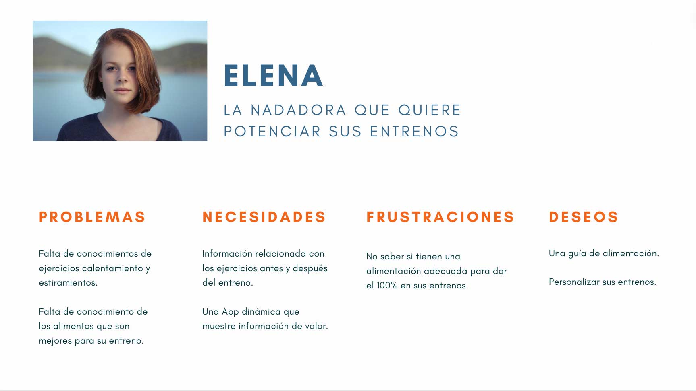
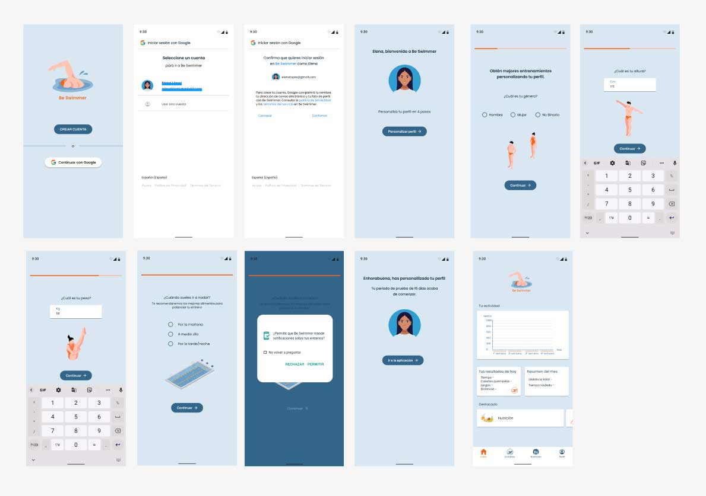
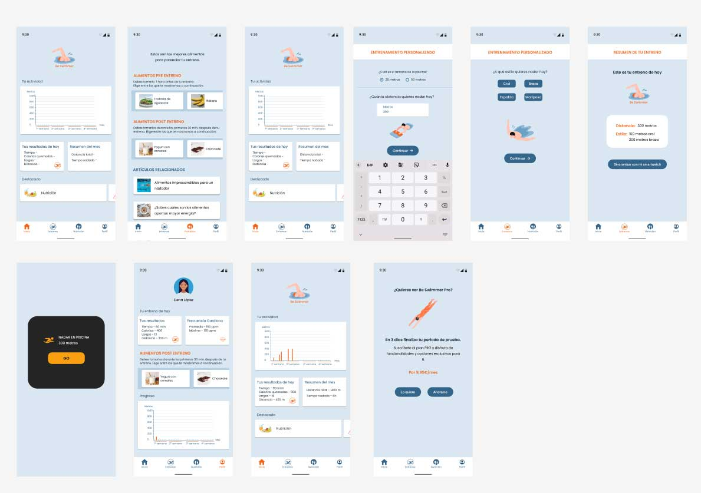

Una app para potenciar tus entrenos
Be Swimmer

Objetivo del proyecto
Hacer una aplicación que tenga que ver con la actividad deportiva o el bienestar personal.
Research
Mi investigación se ha centrado en personas que hacen deporte, así como, usuarios específicos que practican natación. Los datos obtenidos de las encuestas y entrevistas revelan que un 65% (de un total de 50 personas practican deporte). La natación ocupa el 4º lugar entre los deportes más practicados, es un deporte muy recomendado ya que es de bajo impacto y es muy completo
El problema
Los usuarios que no utilizan una app para registrar sus entrenos es porque no cumplen las necesidades de los mismos. Principales problemas detectados:
- - Saber que tipo de alimentos son mejor tomar antes y después del entreno
- - Información sobre ejercicios de calentamiento y estiramiento
- - Poder personalizar sus entrenos
Definición
Usuario
Elena practica natación y requiere más información sobre varios aspectos, entre ellos la alimentación correcta para antes y después de sus entrenos.
A continuación de crear mi user persona y tener detectados los problemas, hice el HMW

Solución - Propuesta de valor
Mi propuesta de valor es una app que muestre los alimentos que se deben tomar antes y después del entreno según el momento del día en el que se haga la actividad.
El resultado de la App Be Swimmer sería este:
Onboarding Hi-fi
Elena se descarga la app Be Swimmer, se registra con Google porque para ella es mucho más cómodo y a continuación, personaliza su perfil en 4 sencillos pasos. Una vez hecho esto ya estaría registrada en Be Swimmer y empezaría su periodo de prueba de 15 días.
Interacción con la aplicación Hi-fi
Elena decide ir a nadar, pero primero consulta qué tipo de alimentos son mejores para antes de ir a entrenar y finalmente se decide por unas tostadas con aguacate. Y se dispone a personalizar su entreno eligiendo los metros que quiere nadar además a qué estilos lo hará. Espera a llegar a la piscina para sincronizar su entreno. Una vez hecho el entreno en Be Swimmer verá un resumen de su entrenamiento, así cómo, lo alimentos mas convenientes para después del entreno.